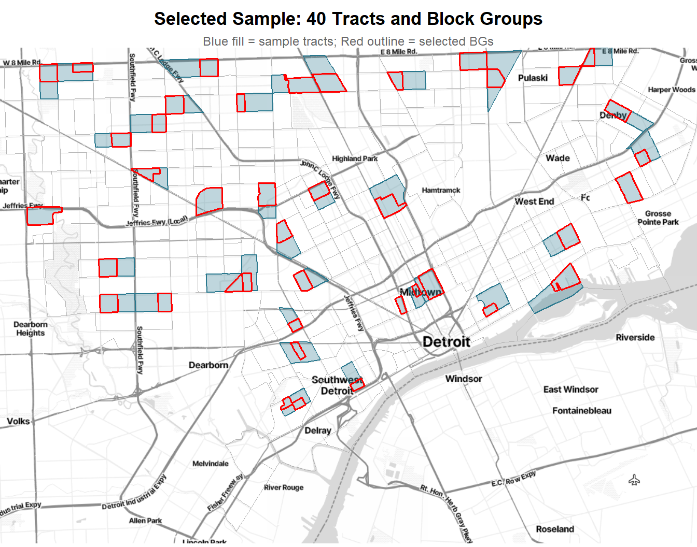

Detroit Transportation Survey: Cheat Sheet
SURV745 Project Quick Reference
What We Did
We designed a two-stage area probability sample for a face-to-face transportation survey of Detroit adults (18+). The sample selects 40 census tracts (PSUs) and 1 block group per tract (SSUs) using systematic PPS with a composite measure of size. We do not select persons directly because no address list exists; instead we describe how field teams would list households in each selected block group, sample households, and select one adult per household using a Kish grid or next-birthday method. Selecting one person per household is important because the outcome variables (vehicle ownership, transit use, skipping trips, asking for rides) are household-correlated, so selecting two people from the same household would inflate the design effect.
What We Found
The frame starts from the Tract and BlockGroup sheets of the provided Detroit_MI.xlsx file, which contain tract- and BG-level counts from the 2020 DHC. After restricting to the 280 Detroit FIPS codes, the raw frame has 276 unique tracts and 627 block groups. Tract 9855 (26163985500) appears identically 25 times with zero population in every column, likely a water body or uninhabited industrial zone, and we drop it at ingestion. In the QC step we drop 5 additional tracts with zero adult population and 9 zero-adult block groups within otherwise populated tracts, leaving 270 tracts and 612 block groups. Five additional tracts are so small (1 to 71 adults) that all their block groups fail the feasibility check; we link them with geographic neighbors following Kish (1965), reducing the frame to 265 PSUs absorbed into 3 receiving tracts. Another 6 block groups within otherwise large tracts also fail feasibility, but their near-zero MOS means they are extremely unlikely to be selected by PPS; we note them and would apply Kish linking in the field if needed. The final frame covers 480,131 adults across approximately 309,916 households.
The composite MOS technique (VDK Eq. 10.1) assigns each tract a size measure that accounts for all four age domains and their different sampling rates. This produces self-weighting samples within each domain and equal workload across all 40 sample tracts. We verified this by replicating the VDK Example 10.1 spreadsheet checks: all within-PSU rates are below 1 (feasibility passes), every PSU has the same expected workload of approximately 53.9 persons, and the product \(\pi_i \cdot \pi_{j|i} \cdot \pi_{k|ij}(d) = f_d\) holds for every PSU and domain (self-weighting confirmed). A uniform sampling rate would not work because differential response rates (0.35 to 0.65) cause some domains to miss their 250-respondent target by up to 8.5%.
Equation Reference
| Symbol | Name | Formula | What it means |
|---|---|---|---|
| \(f_d\) | Domain sampling rate | \(f_d = \dfrac{n_d^{\text{select}}}{N_d} = \dfrac{250/r_d}{N_d}\) | The fraction of persons in domain \(d\) that we aim to select. Different for each age group because response rates differ. This is the target overall selection probability for every person in domain \(d\). |
| \(S_i\) | Composite MOS for PSU \(i\) | \(S_i = \displaystyle\sum_{d=1}^{4} f_d \cdot N_i(d)\) | The expected number of selections from tract \(i\) if domain rates were applied to its populations. Larger tracts with more people in hard-to-reach domains get higher MOS. (VDK Eq. 10.1, p. 282) |
| \(S\) | Total MOS | \(S = \displaystyle\sum_{i} S_i = \sum_d f_d N_d\) | Equals the total number of selections across all domains (\(\approx 2{,}155\)). Also equals \(m \cdot \bar{n} \cdot \bar{q}\). (VDK p. 286) |
| \(\pi_i\) | PSU selection probability | \(\pi_i = \dfrac{m \cdot S_i}{S}\) | Probability that tract \(i\) is selected into the sample. Proportional to its composite MOS. Must be \(\leq 1\). (VDK p. 282) |
| \(S_{ij}\) | Composite MOS for BG \(j\) in tract \(i\) | \(S_{ij} = \displaystyle\sum_d f_d \cdot Q_{ij}(d)\) | Same idea as \(S_i\) but at the block group level, where \(Q_{ij}(d)\) is the domain \(d\) population in BG \(ij\). (VDK p. 286) |
| \(\pi_{j|i}\) | Conditional BG selection probability | \(\pi_{j|i} = \dfrac{\bar{n} \cdot S_{ij}}{S_i} = \dfrac{S_{ij}}{S_i}\) | Probability of selecting BG \(j\) given that tract \(i\) was selected. Since \(\bar{n}=1\), this is just the BG’s share of the tract’s MOS. (VDK p. 286) |
| \(\pi_{ij}\) | Joint BG probability | \(\pi_{ij} = \pi_i \cdot \pi_{j|i}\) | What the two-stage selection actually produces. This is the probability that BG \(ij\) ends up in the sample. (VDK p. 286) |
| \(\bar{q}\) | Workload per BG | \(\bar{q} = \dfrac{S}{m \cdot \bar{n}} \approx 53.9\) | Expected number of persons to contact in each selected BG. Same in every BG; this is the equal workload property. |
| \(\pi_{k|ij}(d)\) | Within-BG person rate | \(\pi_{k|ij}(d) = \dfrac{\bar{q} \cdot f_d}{S_{ij}}\) | Rate at which field teams sample persons in domain \(d\) within BG \(ij\). Varies by BG and domain. Must be \(\leq 1\) (feasibility). (VDK p. 287) |
| \(n^*_i(d)\) | Expected domain sample in PSU \(i\) | \(n^*_i(d) = \bar{q} \cdot f_d \cdot \dfrac{N_i(d)}{S_i}\) | How many persons from domain \(d\) we expect to select in tract \(i\). Generally not an integer. (VDK Eq. 10.2, p. 283) |
| Self-weighting | — | \(\pi_i \cdot \pi_{j|i} \cdot \pi_{k|ij}(d) = f_d\) | The \(S_i\) and \(S_{ij}\) terms cancel. Every person in domain \(d\) has the same overall probability \(f_d\), regardless of which tract or BG they live in. (VDK p. 286) |
| \(d_{0}\) | Base weight | \(d_0(d) = 1/f_d\) | Inverse of the selection probability. Constant within each domain under self-weighting. (VDK Ch. 13) |
| \(a_{1b}\) | Unknown eligibility adj. | \(a_{1b} = \dfrac{\sum_{s_b} d_{0i}}{\sum_{s_{b,KN}} d_{0i}}\) | Redistributes weight of cases with unknown eligibility to those with known status. (Lecture Ch. 13, Slide 30) |
| \(a_{2c}\) | NR adjustment | \(a_{2c} = \dfrac{\sum_{s_{c,E}} d_{1i}}{\sum_{s_{c,ER}} d_{1i}}\) | Inflates respondent weights to account for eligible non-respondents. With age-domain classes: \(\approx 1/r_d\). (Lecture Ch. 13, Slide 48) |
| deff | Design effect | \(\text{deff} \approx 1 + (\bar{b}-1)\delta\) | How much clustering inflates the variance compared to SRS. \(\bar{b} \approx 25\) respondents/PSU, \(\delta\) = intraclass correlation. (VDK Ch. 9, Eq. 9.5) |
Selected Sample Map
The map below shows the 40 selected tracts (blue fill) and the 40 selected block groups (red outline) overlaid on the Detroit city boundary. The systematic PPS selection with FIPS-sorted implicit stratification spreads the sample across the city geographically.